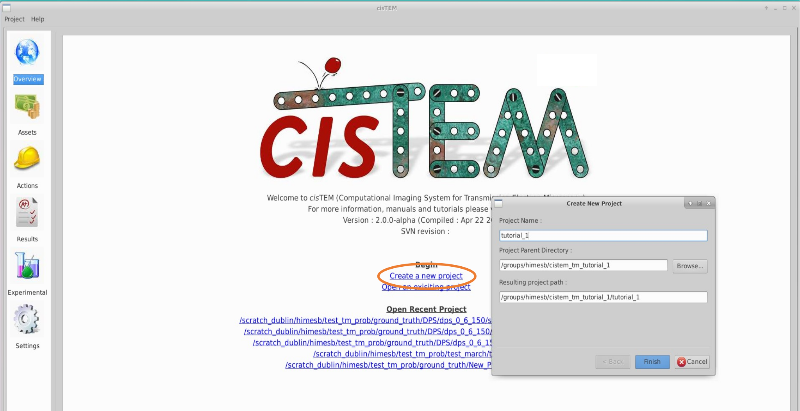
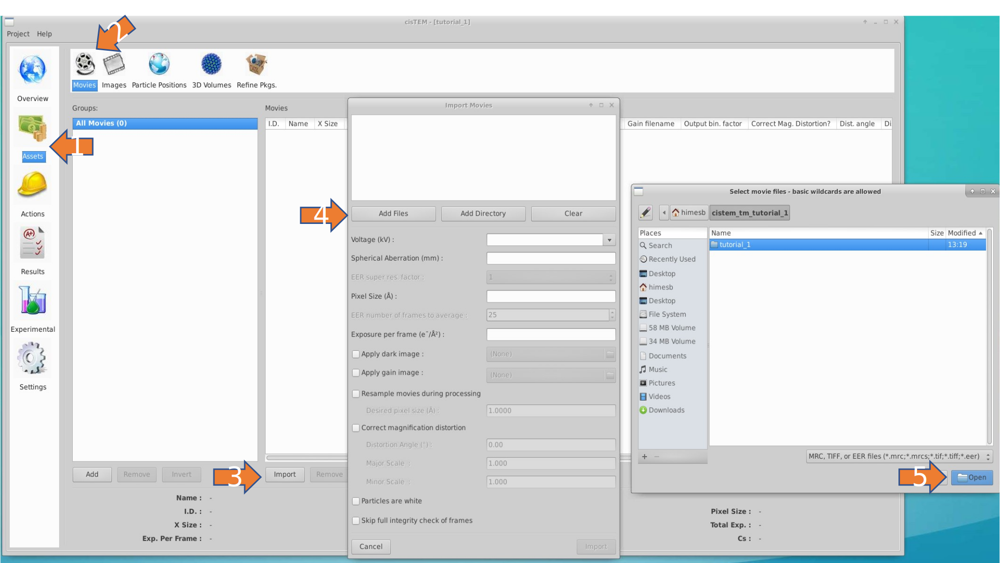
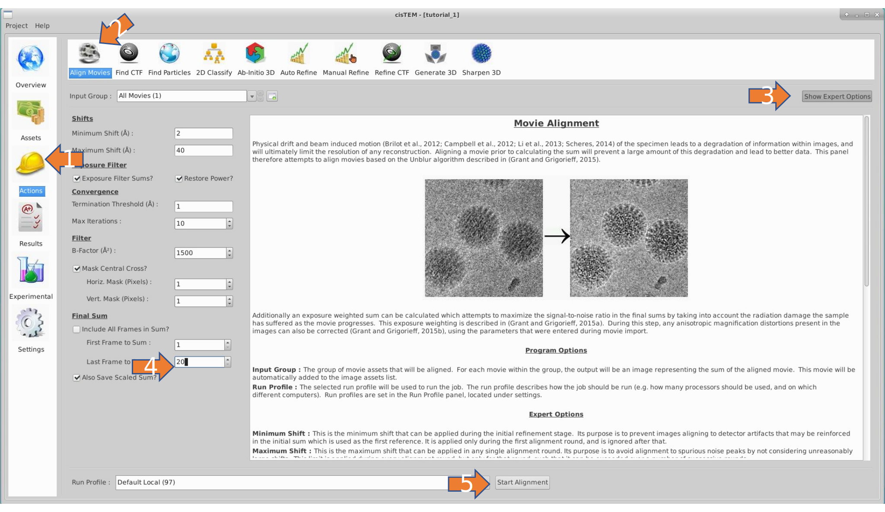
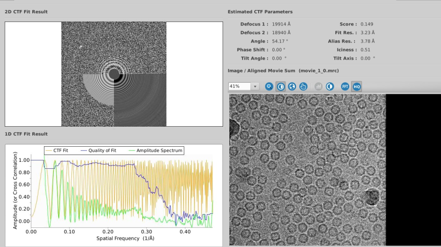
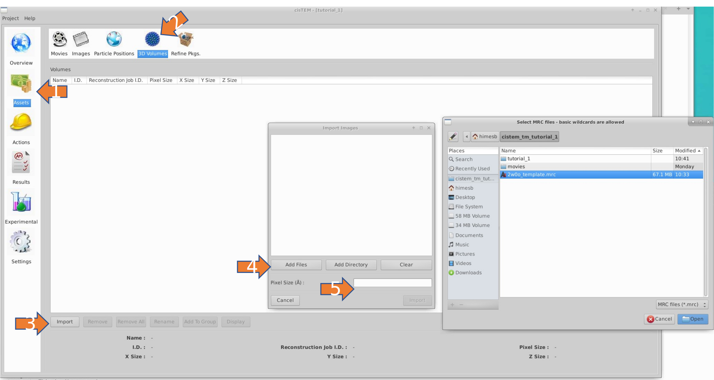
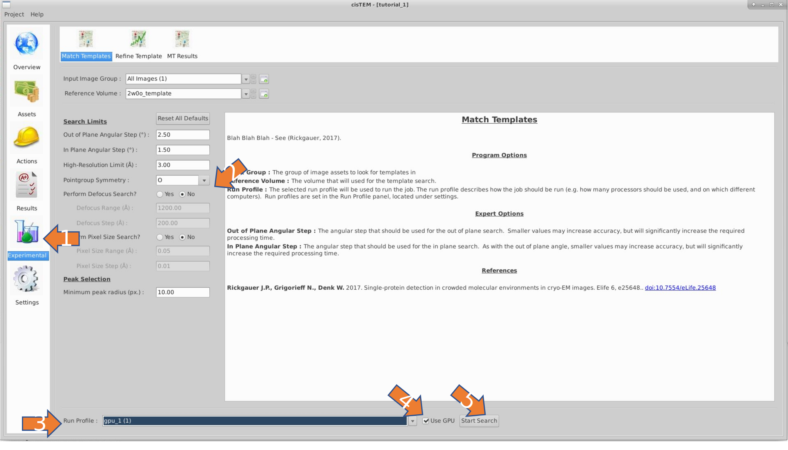
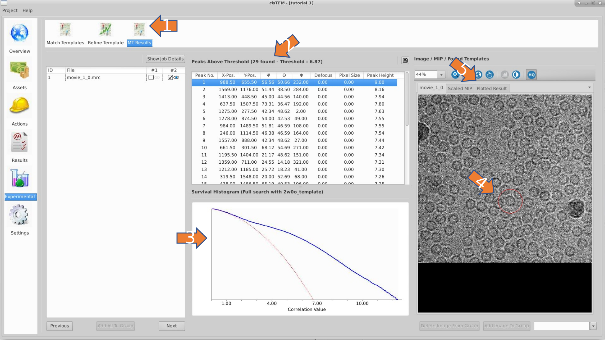

Tutorials¶
Template matching intro TODO:
1 - 2DTM using the GUI¶
Prerequisite - 2DTM requires an alpha version of cisTEM. If you have not done so, please start by installing one, and return here when finished.
Project Setup¶
Download the EM data¶
We first need to obtain the data for the tutorial. If you have gone through the cisTEM single particle tutorial, then you already have it on hand. If not, we will be processing a single movie from that data set, which may be obtained from the CLI:
mkdir ${HOME}/cistem_tm_tutorial_1 ${HOME}/cistem_tm_tutorial_1/movies
cd ${HOME}/cistem_tm_tutorial_1/movies
wget -m ftp://ftp.ebi.ac.uk/empiar/world_availability/10146/data/May08_03.05.02.bin.mrc
# The full file structure is also created, so to save us some clicking, we link to the downloaded movie. Note, this is not necessary.
ln -s ftp.ebi.ac.uk/empiar/world_availability/10146/data/May08_03.05.02.bin.mrc movie.mrc
Download the PDB model¶
Because these movies are binned, they are not particularly well compressed, so while you wait for your download to finish, we’ll also grab the PDB for horse spleen apoferritin that we’ll use to generate our template.
Note
You’ll need to download the PDB format. Support for PDBx/mmCIF is brewing, but not yet available.
Tip
Some pdb files only include coordinates for the asymmetric unit, like 2w0o.pdb apoferritin. When you click to download, select the “Biological Assembly” to get a PDB with all the atoms specified.
Pre-process the data¶
create project¶
open cisTEM
${HOME}/cisTEM_alpha/src/cisTEM
create a new project in the cistem_tm_tutorial_1 folder

import movie asset¶
Different types of data in cisTEM are referred to as assets. Import your movie assest, with data parameters:
Voltage: \(300 ~keV\)
Spherical Aberration: \(0.001~ mm\)
Pixel Size: \(1.5 ~\mathring{A}\)
Exposure Per Frame: \(2.0~ e^{-}/\mathring{A}^2\)

align your movie¶
Tip
We tend to see the best detection with a total exposure between 30-50 \(e^{-}/\mathring{A}^2\). When aligning your movies, you may select a range of frames to average together, we we choose 20 frames, corresponding to 40 \(e^{-}/\mathring{A}^2\).

measure your ctf¶
You can use the default settings for this step. Your results should be similar to below:

Import your template¶
Use the left toolbar to open the assets panel
Select 3D volumes
Select import
Select add files, and choose the template you generated in the previous step
Enter 1.5 for the pixel size, which will enable the “Import” button

Setup run profile¶
Use the left toolbar to open the settings panel
Duplicate your default run profile, then click rename and type in gpu_1
2x click the run profile entry to edit
Change the number of threads to 4
Be sure to click save!

Tip
On some screens, this edit run profile dialog doesn’t automaticallyexpand the whole way to expose the “ok” and “cancel” buttons. As a workaround, expand to full screen with the square icon.
Search¶
Use the left toolbar to open the experimental panel
Change the symmetry to octahedral (o) in the dropdown, and togel the defocus seasrch off
Select our gpu_1 run profile
2x check that the Use GPU radio button is selected
Start your search!

Note
With the symmetry, no defocus search, and small image size, this search should only take 2-3 minutes depending on your GPU.
Analyze results¶
Select the MT Results icon
Check the number of statistically significant detections
Check to see how well the search conformed to gaussian statistics
Scroll through the peak list, which highlights detections in your …
image display options a) image b) scaled mip c) plotted result

End matter¶
If you’ve made it through these tutorials, you are ready for some more advanced usage. Please have a look over the discussion into link TODO for an overview of how you might design an experiment where you use 2DTM.
Once you are better oriented to the theory, please have a look at the How-to guides which give recipes for more specific scenerios, with relevant links to detailed discussion and reference material.
Get matchin’!